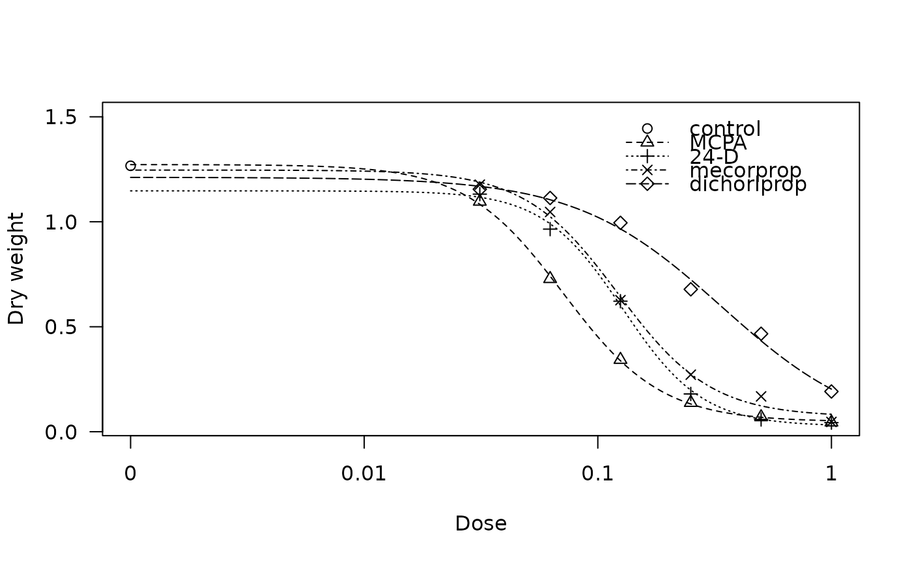

Effect of technical grade and commercially formulated auxin herbicides
auxins.RdMCPA, 2,4-D, mecorprop and dichorlprop were applied either as technical grades materials or as commercial formulations. Each experimental unit consisted of five 1-week old seedlings grown together in a pot of nutrient solution during 14 days.
Usage
data(auxins)Format
A data frame with 150 observations on the following 5 variables.
dryweighta numeric vector
dosea numeric vector
replicatea factor with 3 levels
herbicidea factor with 5 levels
formulationa factor with 2 levels
Details
Data are parts of a larger joint action experiment with various herbicides.
The eight herbicide preparations are naturally grouped into four pairs (herbicide:formulation) + control, and each pair of herbicides should have the same active ingredients but different formulation constituents, which were assumed to be biologically inert. The data consist of the 150 observations of dry weights, each observation being the weight of five plants grown in the same pot. All the eight herbicide preparations have essentially the same mode of action in the plant; they all act like the plant auxins, which are plant regulators that affect cell enlongation an other essential metabolic pathways. One of the objects of the experiment was to test if the response functions were identical except for a multiplicative factor in the dose. This is a necessary, but not a sufficient, condition for a similar mode of action for the herbicides.
Source
Streibig, J. C. (1987). Joint action of root-absorbed mixtures of auxin herbicides in Sinapis alba L. and barley (Hordeum vulgare L.) Weed Research, 27, 337--347.
References
Rudemo, M., Ruppert, D., and Streibig, J. C. (1989). Random-Effect Models in Nonlinear Regression with Applications to Bioassay. Biometrics, 45, 349--362.
Examples
library(drc)
## Displaying the data
head(auxins)
#> dryweight dose replicate herbicide formulation
#> 1 1.51 0.000 1 control control
#> 2 1.43 0.000 1 control control
#> 3 0.05 1.000 1 MCPA tech
#> 4 0.06 0.500 1 MCPA tech
#> 5 0.15 0.250 1 MCPA tech
#> 6 0.40 0.125 1 MCPA tech
## Fitting a four-parameter log-logistic model with different curves per herbicide
auxins.m1 <- drm(dryweight ~ dose, herbicide, data = auxins, fct = LL.4())
#> Control measurements detected for level: control
summary(auxins.m1)
#>
#> Model fitted: Log-logistic (ED50 as parameter) (4 parms)
#>
#> Parameter estimates:
#>
#> Estimate Std. Error t-value p-value
#> b:MCPA 2.0706241 0.3893031 5.3188 4.260e-07 ***
#> b:24-D 2.5445569 0.7248661 3.5104 0.000610 ***
#> b:mecorprop 2.1805520 0.6672103 3.2682 0.001375 **
#> b:dichorlprop 1.3931656 0.6406655 2.1746 0.031419 *
#> c:MCPA 0.0476642 0.0481999 0.9889 0.324501
#> c:24-D 0.0267124 0.0545256 0.4899 0.625002
#> c:mecorprop 0.0714663 0.0669183 1.0680 0.287458
#> c:dichorlprop -0.0207450 0.3280620 -0.0632 0.949674
#> d:MCPA 1.2724266 0.0599127 21.2380 < 2.2e-16 ***
#> d:24-D 1.1472951 0.0877739 13.0710 < 2.2e-16 ***
#> d:mecorprop 1.2462095 0.1058526 11.7731 < 2.2e-16 ***
#> d:dichorlprop 1.2117312 0.1012559 11.9670 < 2.2e-16 ***
#> e:MCPA 0.0710631 0.0076089 9.3394 3.620e-16 ***
#> e:24-D 0.1275807 0.0147148 8.6702 1.246e-14 ***
#> e:mecorprop 0.1218997 0.0156858 7.7714 1.815e-12 ***
#> e:dichorlprop 0.3391236 0.1391753 2.4367 0.016136 *
#> ---
#> Signif. codes: 0 ‘***’ 0.001 ‘**’ 0.01 ‘*’ 0.05 ‘.’ 0.1 ‘ ’ 1
#>
#> Residual standard error:
#>
#> 0.1535001 (134 degrees of freedom)
## Plotting the fitted curves
plot(auxins.m1, xlab = "Dose", ylab = "Dry weight")
